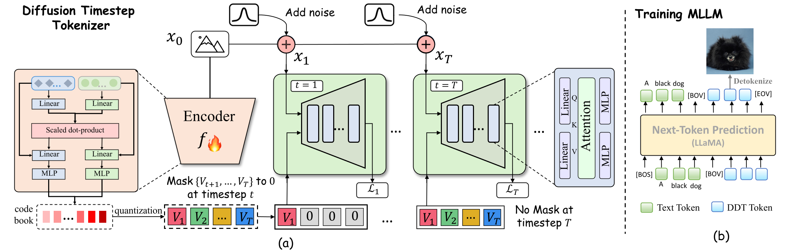
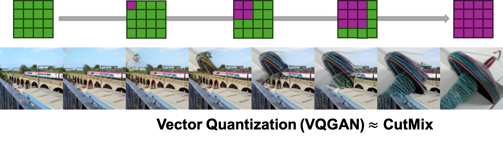
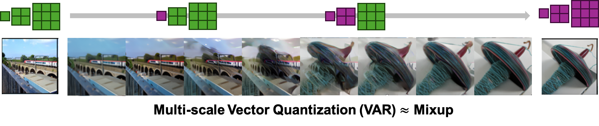
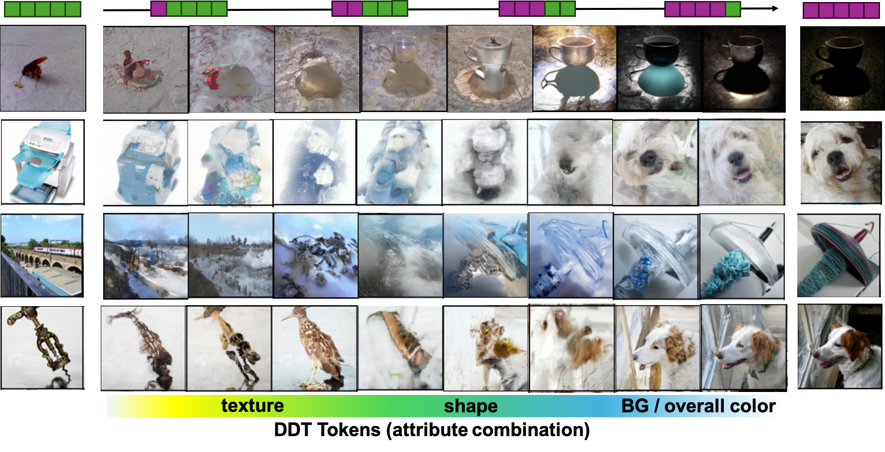

DDT tokens are RECURISIVE, which is reflected in token intrinsic semantics during tokenizer learning. Unlike spatial tokenizers decoding all tokens at once, each DDT token is related to diffusion timesteps, building on the semantics of preceding tokens to compensate for newly-lost info in the current timestep. From early to late timesteps, an expanding subset of DDT tokens is input to the decoder, with new tokens compensating for newly-lost semantics in each timestep. During diffusion process, fine-grained attributes such as texture are lost with less noise added (i.e., early time-steps), while coarse-grained ones such as shape are lost by adding more noise (i.e., late time-steps). So DDT tokens recursively acquire attributes ranging from fine-to-coarse and are semantically combined to construct the image.
Based on such recursive visual tokens, we develop  DDT-LLaMA through autoregressive multimodal pretraining. We find DDT-LLaMA effectively integrates the strengths of LLMs in autoregressive reasoning and diffusion models in precise image generation, achieving seamless multimodal comprehension and generation within a unified framework.
DDT-LLaMA through autoregressive multimodal pretraining. We find DDT-LLaMA effectively integrates the strengths of LLMs in autoregressive reasoning and diffusion models in precise image generation, achieving seamless multimodal comprehension and generation within a unified framework.
Q: Residual Tokenizers (such as VAR) design multiple tokens compensate for the information loss in a single quantization operation. What is the difference from Residual Tokenizers?
A: Residual tokenizer aims to approximate the visual feature more precisely in a single quantization operation, WITHOUT altering the essence of 'spatial tokenizer'. It divides tokens into multi-scales (from lower to higher resolutions) and the reconstructed image visually appears as the mixup of images from each scale.In contrast, DDT tokens are NOT spatial tokens, binding token decoding with diffusion timesteps. From early to late timesteps, an expanding subset of DDT tokens is input to the decoder, with new tokens compensating for newly-lost semantics in each timestep. So tokens recursively acquire attributes ranging from fine-to-coarse and are semantically combined to construct the image.
Below, we demonstrate examples of counterfactual interpolation using two images to further illustrate that VQGAN tokens and VAR tokens are spatial tokens (similar to cutmix or mixup), while DDT-tokens are semantic tokens.



 ), we will release a more powerful version of DDT-LLaMA (We rename it as SelfTok), along with a more detailed technical report. Stay tuned!
), we will release a more powerful version of DDT-LLaMA (We rename it as SelfTok), along with a more detailed technical report. Stay tuned!